1 октября отмечается Международный день музыки. Праздник учредили по инициативе Международного
музыкального совета при ЮНЕСКО в 1973 году. Одним из инициаторов учреждения стал знаменитый
советский композитор Дмитрий Дмитриевич Шостакович.
Праздник отмечают более чем в ста странах мира. Например, в Германии ко Дню музыки
приурочен крупнейший в мире фестиваль готической музыки и искусства Wave-Gotik-Treffen
. В Нидерландах праздник также отмечают фестивалем рок-музыки«Пинк-поп». В Португалии в День музыки традиционно проходит большая
«Ночь фаду».
А мы предлагаем вам взглянуть на необычную виртуальную книжную выставку, скучно точно не будет!
Боб Дилан
Классика
XX век
Что-нибудь ещё?
Книжка с картинками
С чего начать
100
Признание
Боб Дилан: фактор крутости
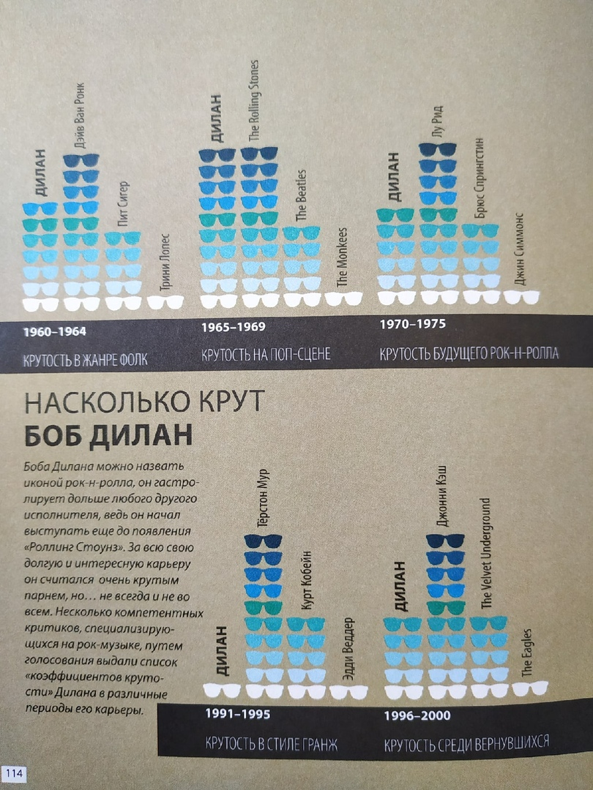
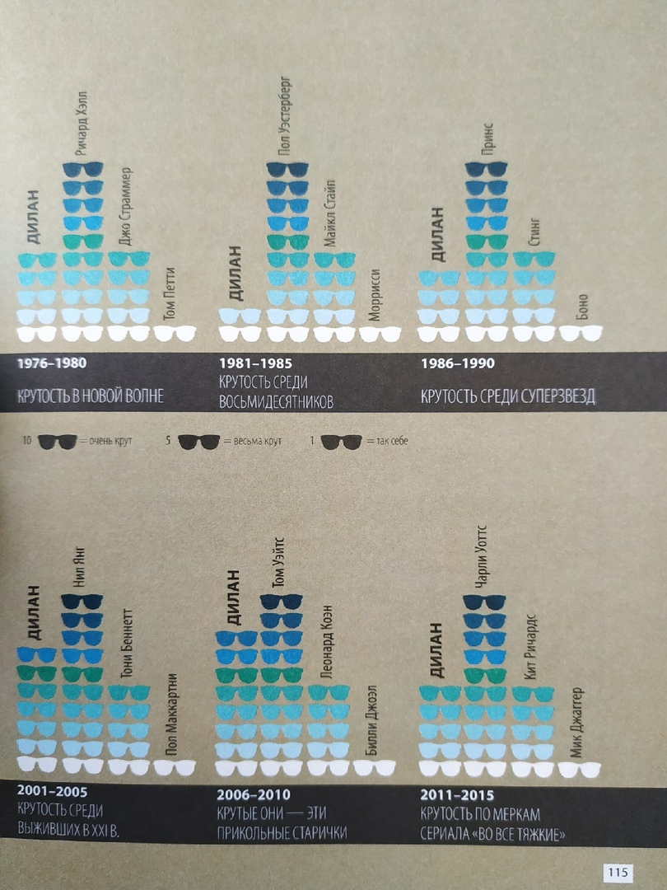
Узнать, насколько крут Боб Дилан, помогла эта книга:
Беттс, Г. Мировая музыка в инфографике / Г. Беттс. - Санкт-Петербург : Питер, 2017. - 159 с.
Замечательный рассказчик и профессиональный музыкант Алексей Сканави легко и увлекательно поговорит с
вами о серьёзном: приводит малоизвестные забавные факты из жизни великих музыкантов, из истории
известнейших произведений классической музыки, даёт советы, как начать понимать классику.
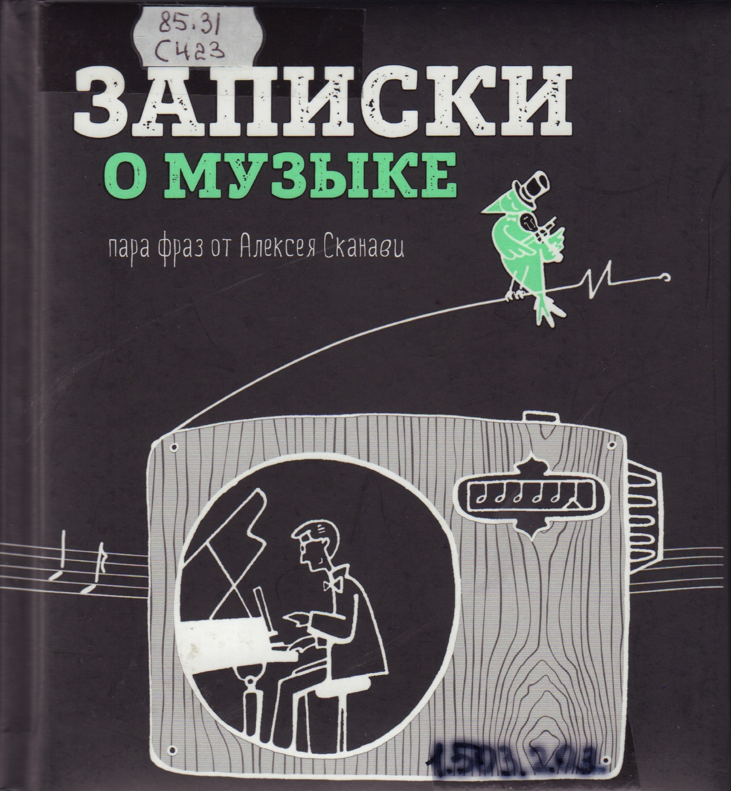
Рок: микс, покоривший сердца
Точная дата рождения рока не известна. Нет у него и какого-то одного отца-основателя. Рок возник в
Америке из смеси блюза, джаза, кантри, ритм-энд-блюза и других музыкальных стилей. Музыканты 1950-х
годов соединили эти формы и ритмы, еще не понимая, что получившаяся смесь положит начало большой
революции.
"Иллюстрированная история рока" - книга про эту революцию. Она расскажет о группах и исполнителях, о
самых важных песнях и альбомах, о фестивалях и фанатах, о звукозаписывающих компаниях, музыкальных
журналах и передачах - короче, обо всем!
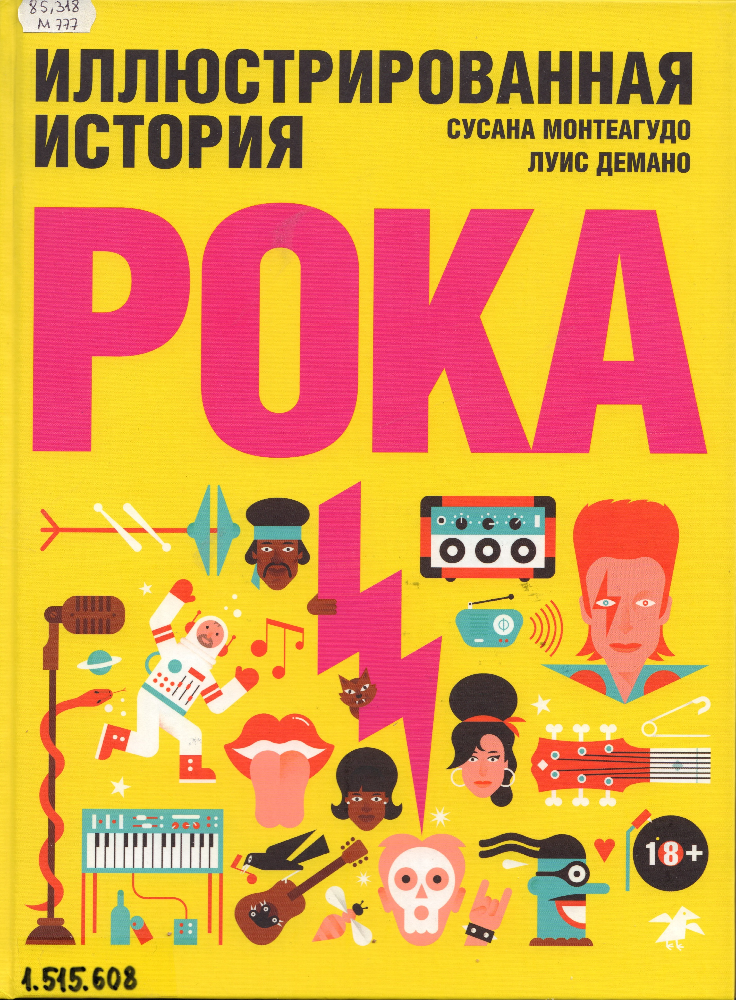
Комиксы бывают разные: родословная хип-хопа
Стараниями издательства «Белое яблоко» с мая 2017 года на русском языке начинает
выходить знаменитая серия комиксов «Родословная хип-хопа» (Hip-Hop
Family Tree). Автор этой серии, Эд Пискор, так рассказывает о своей идее: «Я давно
хотел рассказать историю, повествование в которой выстраивалось бы на ландшафтах
хип-хоп-среды, но у меня не было чёткого представления о том, как она
должна выглядеть». Серия «Родословная хип-хопа» описывает события,
происходившие на этапе формирования хип-хопа как полноценной культуры
в промежутке между концом 1970-х и вплоть до середины 1980-х
.
В 2013 году комикс получил престижную премию Айснера как серия комиксов, был признан New York Times
бестселлером года среди графических романов, а The Washington Post включила его в список
из 10 лучших графических романов 2013 года.
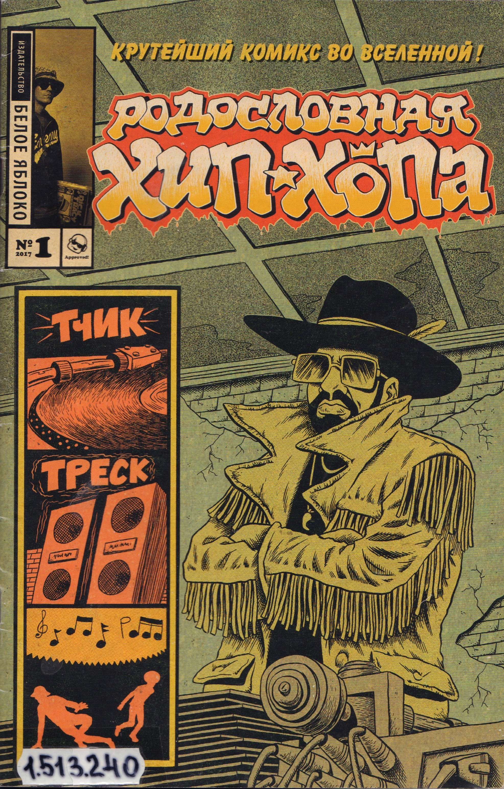
Боб Дилан: хроники
В «Хрониках» Дилан рассказывает, как зарождалась легенда — первые записи,
первые знакомства, первый успех, первая слава. Это рассказ о становлении Поэта: что на него
повлияло и как он позже повлиял на всю американскую жизнь, не только литературную.
Воспоминания музыканта позволят заглянуть в его творческую кухню и прочувствовать дух времени,
когда музыканты-поэты собирали стадионы.
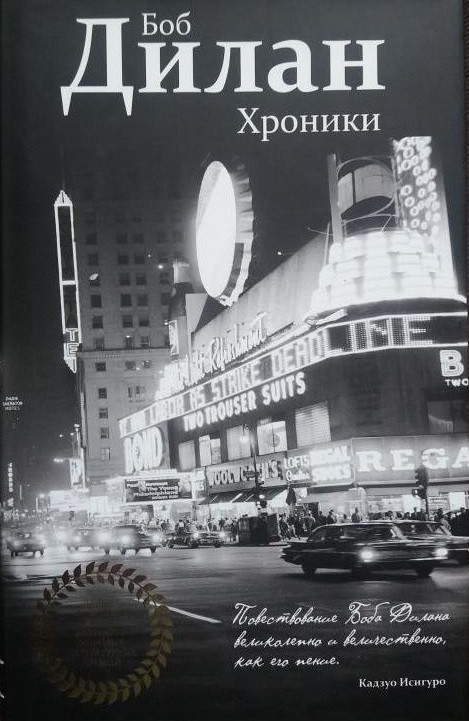
Полчаса музыки. Как понять и полюбить классику
Cлушать музыку — это самое интересное, что есть на свете. Вы убедитесь в этом,
читая книгу музыкального журналиста и популярного лектора Ляли Кандауровой. Вместо скучного
и сухого перечисления фактов перед вами настоящий абонемент на концерт: автор рассказывает
о 600-летней истории музыки так, что незнакомые произведения становятся близкими,
а знакомые — приносят еще больше удовольствия.
Дальше - шум. Слушая XX век
Увлекательная и драматическая история, написанная музыкальным критиком The New Yorker Алексом
Россом, охватывает весь ХХ века — из Вены до Первой мировой войны в Париж
двадцатых, из гитлеровской Германии и сталинской России в нью-йоркский
даунтаун шестидесятых-семидесятых, из Пекина наших дней в увлеченную
экспериментами Европу. Книга Росса — это виртуозный проводник по лабиринту музыкальных
стилей, который не только укажет путь, но и поведает о самых известных композиторах
ХХ века и связи их произведений с окружающей действительностью.
«Дальше — шум» — удивительная летопись ХХ века, пересказанная
с помощью музыки.
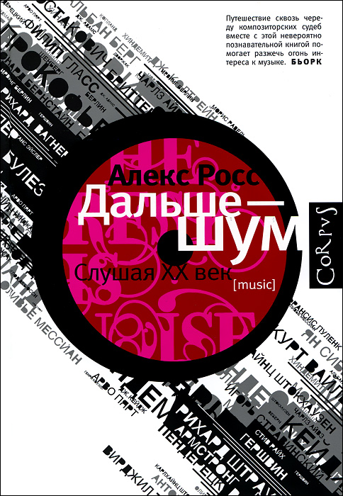
Если вы давно хотели читать рэп, но не знали, с чего начать
Период с 2009 (когда книга была издана) по 2019 год — время грандиозных перемен
в рэпе, когда он изменился примерно полностью. Перед вами сборник практических советов,
но в первую очередь важный документ эпохи: как мыслили и видели себя в жанре рэперы
десятилетие назад.
Николай Редькин
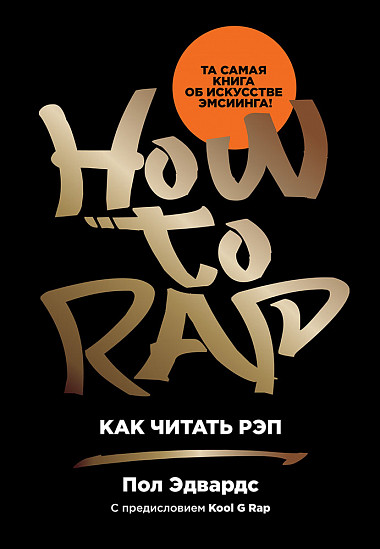
Боб Дилан: 100 песен и портретов
«Дилан сломал, казалось бы, вечный стереотип поп-культуры — что
популярная песня обязательно примитивна, что она не может быть интеллектуальной, философичной,
нести в себе формы высокой поэзии. Он писал стихи в полный рост».
АРТЕМИЙ ТРОИЦКИЙ
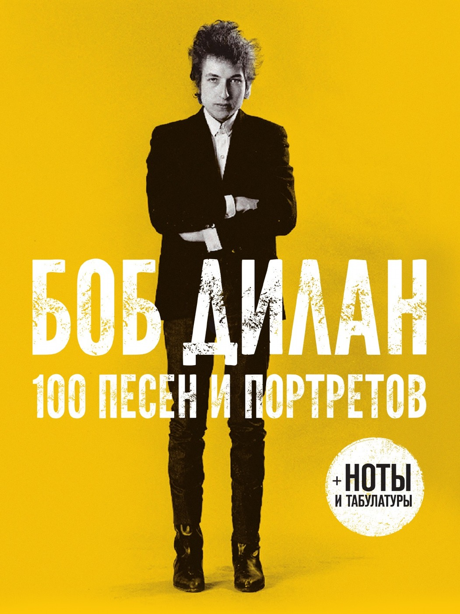
Опера. Опера? Опера!
Основу издания составляет ставшая классической на Западе книга американского музыкального критика,
педагога и издателя Генри У.Саймона «Сто великих опер», впервые опубликованная
в 1957 году и с тех пор не раз переиздававшаяся на Западе. Жанр оперы
насчитывает вот уже 400 лет. За эти столетия опера прошла огромный путь. Были написаны
и поставлены на сценах театров мира тысячи опер. Из этого океана музыки Генри
У.Саймон выбрал сто самых великих творений. Это оперы Глюка, Моцарта, Россини, Верди, Вагнера, Пуччини
и других великих композиторов. Автор книги, помимо изложения содержания каждой из этих опер,
знакомит читателя с историей создания произведений и любопытными фактами их сценической
жизни. Перу переводчика книги Генри У.Саймона, известного российского музыканта и искусствоведа
Александра Майкапара принадлежит дополнение к книге — рассказ о создании
и изложение содержания двадцати лучших русских опер.
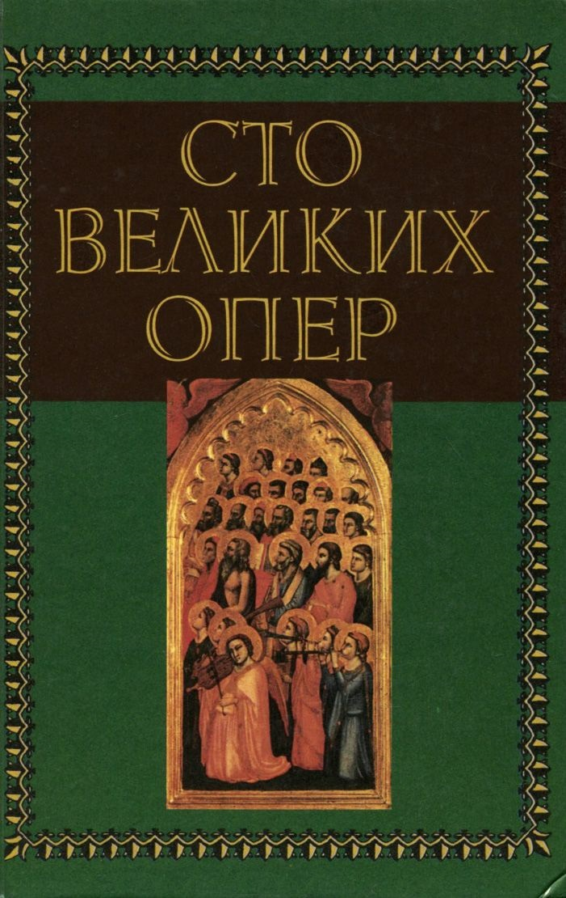
Сто легенд джаза
Джаз спустя десятки лет продолжает оставаться одним из самых открытых для импровизации, но при
этом наиболее каноничных музыкальных жанров. На страницах издания вас ждет экскурс не только
в биографии знаменитостей, таких как Луи Армстронг, Нина Симон, Эми Уайнхаус,
но и знакомство с музыкальными инструментами, прославившими джаз. Книга станет
замечательным подарком для ценителей джаза. Для тех, кто только начинает интересоваться этим жанром,
настоящей находкой станет рубрика «Обязательно к прослушиванию».
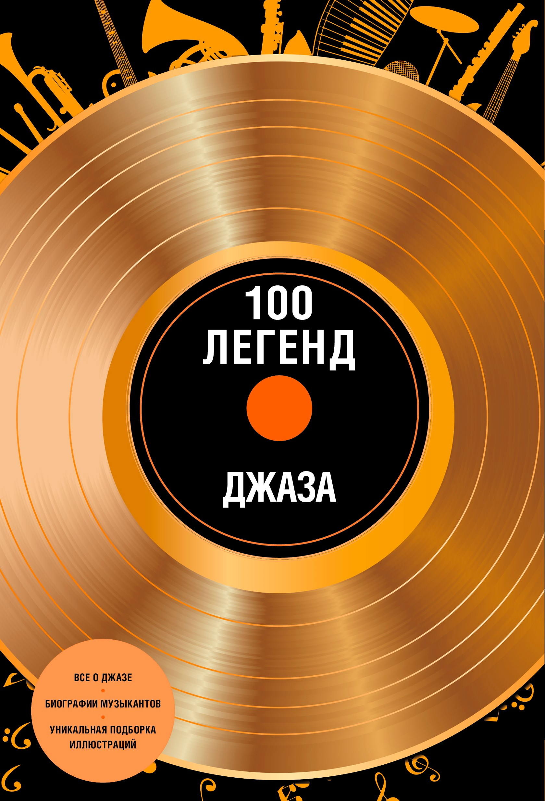
Сто песен НЭПа
Книга о том, как гуляла нэпманская Россия. О тех, чьи песни пели и под чьи мелодии
плясали граждане страны Советов, и о том, чем закончился для звезд эстрады
и их поклонников пресловутый «угар нэпа».
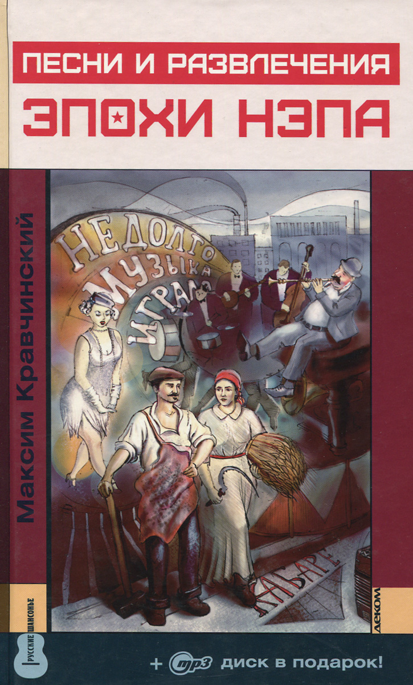
Уже летом 1921 года владелец сада «Аквариум» украсил вход в заведение плакатом:
«Всё как прежде!». Для «воскресших» дам и господ распахнули двери сотни
театров-кабаре, ресторанов и казино. С их подмостков зазвучали голоса новых
любимцев публики: Изабеллы Юрьевой, Вадима Козина, Леонида Утесова, Казимира Малахова, Тамары Церетели,
Аркадия Погодина и Васи Гущинского. А сколько было тех, имена которых позабыты…
О них вы также прочтете в этой книге.
Нэпманская эстрада! Лоскутное одеяло из «цыганщины», фривольных куплетов, интимных
ариеток и блатных песенок. Ошалевший от свободы народ распевал «Кирпичики»,
«Бублички», «Стаканчики граненые» и есенинское «Письмо
к матери».
Публика попроще хохотала над частушками уличных беспризорников и хором вторила куплетисту
из пивной «Трезвость». В кабаре дамочки в лаковых туфельках с жаром
отплясывали фокстроты и танцы апашей. Из парков и синематографов доносились мелодии
джаза, а в особняках «красной» аристократии вновь зазвучали цыганские романсы.
Но уже в середине 20-х начинается борьба с «легким жанром»,
завершившаяся десять лет спустя полным запретом «цыганщины», закрытием кабаре, репрессиями
и отлучением от сцены ведущих представителей эстрады.
Эпоха нэпа была недолгой, но музыкальное эхо ее длилось десятилетиями —
замечательные певцы и певицы, композиторы и музыканты начинали свой жизненный путь именно
тогда.
Это издание представит всю панораму развлечений нэпа, в первую очередь эстрады во всех
ее проявлениях, а также кино, цирка, театров-кабаре и его полной
противоположности — «Синей блузы».
Книга сопровождается подарочным диском mp3, где представлены 100 лучших шлягеров, танго
и фокстротов эпохи нэпа. «Кирпичики» и «Бублички»,
«Шарабан» и «Мурка», «Цыпленок жареный», «Черная
роза» и многие, многие другие — как в архивных записях, так
и в исполнении звезд современной эстрады.
Нобелевка - музыканту? Только одному...
13 октября 2016 года Нобелевский комитет объявил, что Дилан стал лауреатом награды
«за создание новых поэтических выражений в великой американской песенной
традиции». В материале об этом событии газета The New York Times отметила: «
Г-н Дилан, 75 лет, является первым музыкантом, получившим награду, и решение о его
награждении, возможно, является самым радикальным решением в истории [Нобелевской премии],
восходящей к 1901 году». До этого события единственным человеком в истории,
удостоенным и «Оскара», и Нобелевской премии, был Джордж Бернард Шоу. Дилан
присоединился к нему в 2016-м, став вторым.
Боб Дилан получил Нобелевскую премию за поэтические тексты, но если вам хочется почитать то,
что не предназначено для прослушивания, то предлагаем вам единственный роман музыканта:
«Тарантул».
Дилан написал этот роман в 24 года. До сих пор книга, наполненная изощренной игрой смыслов,
поражает трагичностью мировосприятия. Но «Тарантул» страшен и смешон
одновременно — он говорит с вами о простых человеческих истинах, о вас
самих. Это книга об ужасе и хаосе современной жизни.
За кулисами музыкального конкурса
Уникальный сборник статей о главном явлении в российской академической музыкальной
культуре — Международном конкурсе им. П. И. Чайковского. Самая подробная
история именитого соревнования на постсоветском пространстве. Вся закулисная жизнь, подтексты
и контексты в исторических интерьерах. От первого лица. И в то же
время — внешний, объективный анализ внутренних процессов, проблем и достижений.
Газета «Музыкальное обозрение» была непосредственным участником событий. Редакция являлась
пресс-центром конкурсов в 1998 и 2002 годах, работала в Оргкомитетах,
проводила круглые столы, подробно освещала каждый конкурс.
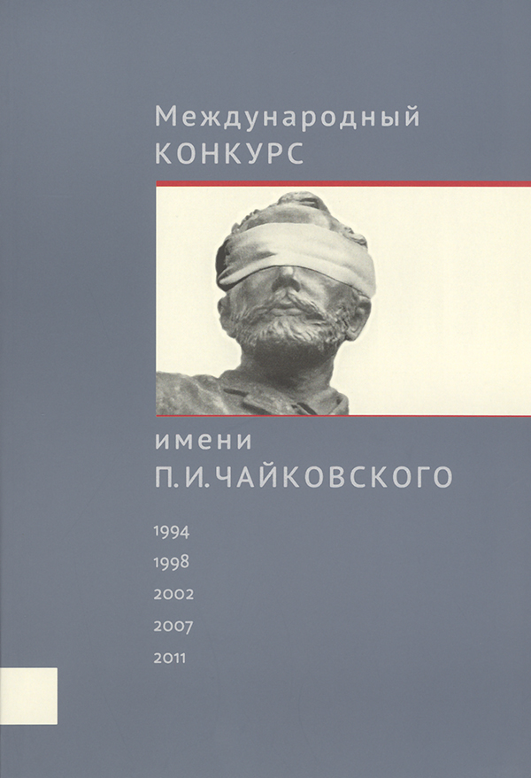
Книга уникальна по охвату исторического материала, публикуемых документов (впервые полностью
приводятся неизвестные документы, стенограммы заседания Оргкомитета), представленных имен, глубине
аналитики (в частности дается статистика и аналитика всех исполняемых программ, аналитика
участников, статистика вузов, театров). Это непосредственная летопись соревнования без прикрас
и исправлений.
Организаторы и власть. Премии и бюджет. Жюри и дирижеры. Герои и антигерои.
Участники, инструменты и оркестры. Интерпретации и программы. Интриги и скандалы. Все это
темы новой книги, издаваемой «МО» в крупнейшем музыкальном издательстве России
«Композитор — Санкт-Петербург».
Это своего рода учебник конкурсного дела, которому нет аналогов ни в России,
ни за рубежом. Как уникальная летопись музыкальной истории страны книга будет востребована
у музыкантов, ученых и широких гуманитариев, интересующихся процессами развития культуры.
Читатели, кто увлекается non-fiction, найдут в ней непосредственное ощущение времени,
личностные переживания участников, публики и жюри.
Оскара всем
История кино славится своими парадоксами. Иначе и быть не могло. Как вам, например, такая
ситуация: экран ещё не говорил, но уже вовсю пел. Киноакадемия, разумеется, не могла
пройти мимо такого удивительного положения вещей, и в 1934 году представила миру первых
лауреатов в новой категории «Музыка в фильме», предусмотрительно разделив
ее на два разряда — «песня» и «музыкальное
сопровождение».
Подробнее об этой награде, а также список музыкантов, получивших Оскара, можно в книге
Алексея Дунаевского.
Как The Beatles уничтожили рок-н-ролл. Альтернативная история американской популярной музыки
Это ли не признание, когда историю музыки пишут через твоё имя!
Книга Элайджи Уолда, музыканта и историка музыки, — необычный и во многом
полемический взгляд на эволюцию поп-музыки. Это подробный, насыщенный фактами рассказ
о тенденциях и событиях музыкальной истории с конца XIX века по 1970-е
годы. Автор наглядно демонстрирует, что вещи, казалось бы, очевидные и вытекающие
непосредственно из музыкальных задач, на деле — продукт разнообразных конфликтов:
политических, технологических, трудовых и социальных. Уолд видит эволюцию поп-музыки
как историю апроприации и выхолащивания ритма, созданного черными исполнителями.
Он выстраивает парадоксальный нарратив, где героями становятся не привычные всем
поп-идолы, но те условия и контексты, в которых они появились.